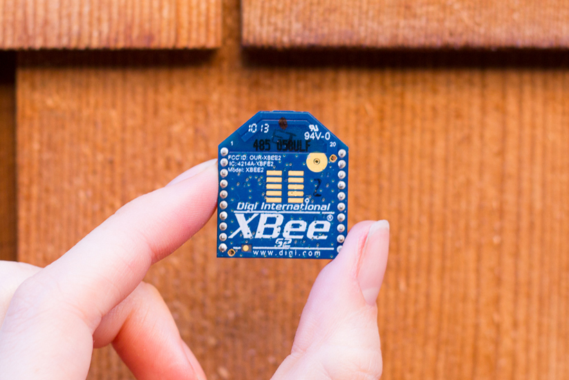

Getting Started with SimpleZigBee
for Arduino & XBee
SimpleZigBee is an easy-to-use Arduino library for communicating with XBee Series 2 and 2B ZigBee radios. The library implements the most popular XBee API frame types (TX, RX, AT Command, etc.) and makes it easy to add a wireless communication network to your Arduino project. This 3 part tutorial covers the basics of using the library to send and receive messages.

Getting Started: Part 2
This tutorial is a continuation Getting Started with SimpleZigBee for Arduino & XBee: Part 1. You will need to complete Part 1 before starting Part 2. In this tutorial, you will again need 2 Arduinos, 2 XBee S2 radios, and 2 XBee Explorer boards. One XBee should have Coordinator API firmware and the other, Router API firmware. In this example, it does not matter if the XBees have the same PAN ID or if they are in API Mode 2 because we will change these settings by sending AT Commands from the Arduino to the XBee.
To setup the Coordinator, connect the XBee (with Coordinator API firmware) to your Arduino, as shown below. Upload the example sketch GettingStarted_Part2_Coordinator.ino to the Arduino and open the Arduino IDE’s Serial Monitor. Read through the code to understand what is being displayed in the serial monitor (though very little will occur until you complete the Router setup below).
To setup the Router, connect the XBee (with Router API firmware) to your second Arduino, as shown below. Upload the example sketch GettingStarted_Part2_Router.ino to the Arduino and open the Arduino IDE’s Serial Monitor. Read through the code to understand what is being displayed in the serial monitor.

Coordinator Code Walkthrough
In this section, we will walk through the GettingStarted_Part2_Coordinator.ino example code and explain the role of the SimpleZigBee library. Much of the code is identical to that from GettingStarted_Part1_Coordinator.ino and so we will focus on the new or modified lines of code. To begin, take a look at the following lines from the setup function.
// Set the API Mode and PAN ID
xbee.prepareATCommand('AP',0x02);
xbee.send();
delay(200);
uint8_t panID[] = {0x12,0x34}; // Max: 64-bit
xbee.prepareATCommand('ID',panID,sizeof(panID));
xbee.send();
The prepareATCommand method clears the contents of the outgoing packet object and then sets the frame id and frame type (AT Command, 0x08). Based on what is passed to the method, the packet length, AT Command (e.g. AP), and optional AT Command payload is also set. Once the outgoing packet is complete, calling the send method will write the packet to the XBee serial port. In the code above, we have examples of sending an AT Command with a 1 byte payload (to set the API Mode to 0x02) and with a payload greater than 1 byte (to set the PAN ID to 0x1234).
Note that when you send an AT Command, the changes are stored in volatile memory and will not persist if power is lost. You can save the changes to non-volatile memory (and they will survive power on/off) using the WR command. However, the WR command should be used sparingly! The EM250 chip inside the XBee only supports a limited number of write cycles.
Next, we will take a look at the loop function. Specifically, we have added code to extract the information from an incoming ZigBee packet for each of the (currently implemented) frame types. We will begin with the ZigBee Receive (RX) frame type (0x90).
if( xbee.isRX() ){
Serial.println( "RX Packet Received" );
// Methods for RX packets are...
SimpleZigBeeAddress addr = xbee.getRXAddress();
SimpleZigBeeAddress64 addr64 = xbee.getRXAddress64();
SimpleZigBeeAddress16 addr16 = xbee.getRXAddress16();
uint8_t rxOpt = xbee.getRXOptions();
uint8_t rxLength = xbee.getRXPayloadLength();
Serial.print( "Payload: " );
for(int i=0;i<rxLength;i++){
uint8_t rxData = xbee.getRXPayload( i );
Serial.print(rxData,HEX);
Serial.print(' ');
}
Serial.println();
}
The isRX method checks if the complete incoming ZigBee packet has the RX (0x90) frame type. If so, we know that the packet includes the 64-bit and 16-bit addresses of the sender, an options byte, and a payload of bytes. The payload can be accessed, one byte at a time, using the getRXPayload(i) method where i is the index of the byte within the payload.
Next, we will look at the Transmit (TX) Status frame type (0x8b).
else if( xbee.isTXStatus() ){
Serial.print( "TX Status Received: " );
// Methods for TX Status packets are...
uint8_t frameID = xbee.getIncomingFrameID();
SimpleZigBeeAddress16 addr16 = xbee.getTXStatusAddress16();
uint8_t txRetry = xbee.getTXStatusRetryCount();
uint8_t txStat = xbee.getTXStatusDeliveryStatus();
uint8_t txDscovery = xbee.getTXStatusDiscoveryStatus();
Serial.print( "Status: " );
Serial.println(txStat,HEX);
}
The TX Status frame type (0x8b) is used for confirming the transmission of a Transmit (TX) ZigBee packet and contains a status report on any discovery, transmission, or delivery issues. The TX Status packet includes the frame id of the TX packet being reported, the 16-bit destination address, the number of retries that occurred, the delivery status (0x00=Success), and the discovery status.
Next, the AT Command Response frame type (0x88).
else if( xbee.isATResponse() ){
Serial.println( "AT Command Response Received" );
// Methods for AT Command Response packets are...
uint8_t frameID = xbee.getIncomingFrameID();
uint16_t atCmd = xbee.getATResponseCommand();
uint8_t atStat = xbee.getATResponseStatus();
uint8_t atLength = xbee.getATResponsePayloadLength();
Serial.print( "Status: " );
Serial.println(atStat,HEX);
if( atLength == 1 ){
uint8_t atData = xbee.getATResponsePayload();
Serial.print( "Payload: " );
Serial.println(atData,HEX);
}else if( atLength > 1 ){
Serial.print( "Payload: " );
for(int i=0;i<atLength;i++){
uint8_t atData = xbee.getATResponsePayload(i);
Serial.print(atData,HEX);
Serial.print(' ');
}
Serial.println();
}
}
If an AT Command packet is sent to the XBee (and the frame id is > 0), an AT Command Response packet (0x88) will be returned. The response contains the frame id of the AT Command packet being reported, the 2 byte AT command, and the command status. Finally, if the AT Command requested register data from the XBee, this is contained in the payload.
else if( xbee.isRemoteATResponse() ){
Serial.println( "Remote AT Command Response Received" );
// Methods for Remote AT Command Response packets are...
SimpleZigBeeAddress addr = xbee.getRemoteATResponseAddress();
SimpleZigBeeAddress64 addr64 = xbee.getRemoteATResponseAddress64();
SimpleZigBeeAddress16 addr16 = xbee.getRemoteATResponseAddress16();
uint8_t frameID = xbee.getIncomingFrameID();
uint16_t reATCmd = xbee.getRemoteATResponseCommand();
uint8_t reATStat = xbee.getRemoteATResponseStatus();
uint8_t reATLength = xbee.getRemoteATResponsePayloadLength();
Serial.print( "Status: " );
Serial.println(reATStat,HEX);
if( reATLength == 1 ){
uint8_t reATData = xbee.getRemoteATResponsePayload();
Serial.print( "Payload: " );
Serial.println(reATData,HEX);
}else if( reATLength > 1 ){
Serial.print( "Payload: " );
for(int i=0;i<reATLength;i++){
uint8_t reATData = xbee.getRemoteATResponsePayload(i);
Serial.print(reATData,HEX);
Serial.print(' ');
}
Serial.println();
}
}
The Remote AT Command Status frame type (0x97) is nearly identical to the AT Command Status frame type(0x88) except that it contains the 64-bit and 16-bit addresses of the XBee radio to which the Remote AT Command was sent.
else if( xbee.isModemStatus() ){
Serial.println( "Modem Status Received" );
// Methods for Modem Status packets are...
uint8_t modemStat = xbee.getModemStatus();
Serial.print( "Status: " );
Serial.println(modemStat,HEX);
}
Lastly, we have the Modem Status frame type (0x8a), which is automatically sent from the XBee in response to specific events. For example, a status of 2 means the XBee (router or end device) joined a network and 6 means the XBee coordinator started.
Modem Status is the last of the status or response frame types currently implemented in the SimpleZigBee library. You can easily add support for other frame types by getting the incoming packet object and parsing the frame data, as shown in the following code.
else{
// Other or unimplemented frame type
SimpleZigBeePacket p = xbee.getIncomingPacketObject();
uint8_t frameType = p.getFrameData(0);
Serial.print( "Other Frame Type: " );
Serial.println(frameType,HEX);
for( int i=1; i<p.getFrameLength(); i++ ){
uint8_t frameData = p.getFrameData(i);
}
}
Near the end of the loop function, you will find the following code.
if( check < 2 ){
if( check == 0 ){
xbee.prepareATCommand('AP');
xbee.send();
Serial.println();
Serial.print("Send: ");
printPacket( xbee.getOutgoingPacketObject() );
}else if( check == 1){
xbee.prepareATCommand('ID');
xbee.send();
Serial.println();
Serial.print("Send: ");
printPacket( xbee.getOutgoingPacketObject() );
}
check ++;
delay(200);
}
Since we changed the XBee’s settings in the setup function, we want to check the register to verify that the changes were made. The code snippet above sends 2 AT Commands (AP and ID) to the XBee. The AT Command Response packets will contain the API Mode and the PAN ID of the XBee, as recorded in the register.
Router Code Walkthrough
In this section, we will walk through the GettingStarted_Part2_Router.ino example code and explain the role of the SimpleZigBee library. Much of the code is identical to that in GettingStarted_Part2_Coordinator.ino and GettingStarted_Part1_Router.ino and so we will focus on the new or modified lines of code. To begin, take a look at the following lines from the loop function.
// The Arduino will send a packet to the XBee once every 5 seconds.
time = millis();
if( time > (last_sent+5000) ){
last_sent = time; // Update the last_sent variable
payload[0] = val >> 8 & 0xff;
payload[1] = val & 0xff;
// The prepareTXRequestToCoordinator method
// will accept a payload and payload length and will
// set the frame type, frame ID, option, and address.
xbee.prepareTXRequestToCoordinator( payload, 2 );
xbee.send();
Serial.print("\nSend: ");
printPacket( xbee.getOutgoingPacketObject() );
val = (val + 10)%500; // Increase val by 10 (start over at 500)
}
With the code above, the Router XBee sends a ZigBee Transmit Request (TX) packet with a payload to the Coordinator XBee once every 5 seconds. We employ theprepareTXRequestToCoordinator method, which sets the TX frame type (0x10), frame id, and option (0x00). The method also sets the default 64-bit and 16-bit addresses for sending a packet to the network coordinator (0x0000000000000000 for coordinator and 0xfffe for unknown/broadcast). Lastly, the prepareTXRequestToCoordinator method accepts a payload (byte array) and payload length as input parameters.